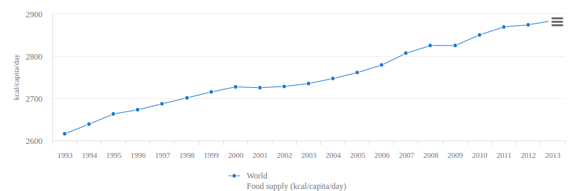

Question 1. How much food ended up feeding the people, and how much ended up feeding the livestock?
Food vs Feed
Population fed by feed supplies
78%
 Asia
Asia
Asia
137%
Europe
Europe
59%
Africa
Africa
175%
America
America
Total food supply in the world
How to use?
Using this interactive map, you can visualize data for the entire
world. For every country, you can how well people are fed, how much
food goes towards feeding people and how much goes towards feeding
livestock. Using the slider at the bottom of the map, you can access
data for every year recorded. On the side you can see a few charts
containing global aggregates.
Click on any country to have more detailed information about it!
Click on any country to have more detailed information about it!
What does it show?
The most striking thing to do is to switch between the "Food" and
"Feed" modes. We purposefully kept the same color scale for both
modes. It shows quite evidently the insane amount of food that is
redirected towards livestock instead of actual people. For instance,
the United States uses 100 times more food to feed livestock than
humans!
It is interesting to see that this trend mostly applies to richer countries, the poorer ones tend to have less proportion gap. Our charts on the right also show quite evidently that we have way more food than needed in the world, the main problem is how it is repartited.
It is interesting to see that this trend mostly applies to richer countries, the poorer ones tend to have less proportion gap. Our charts on the right also show quite evidently that we have way more food than needed in the world, the main problem is how it is repartited.